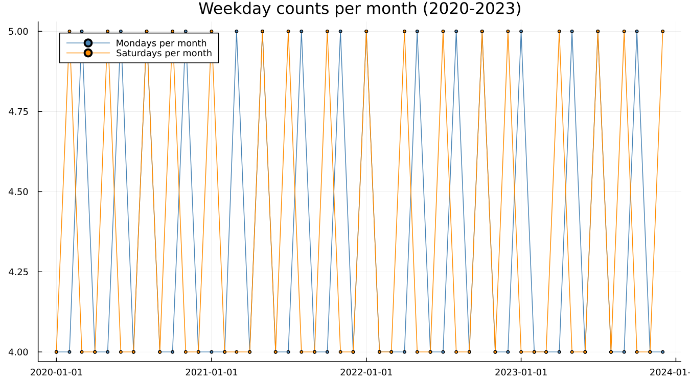
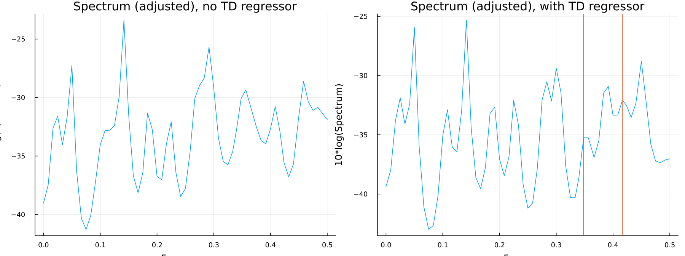
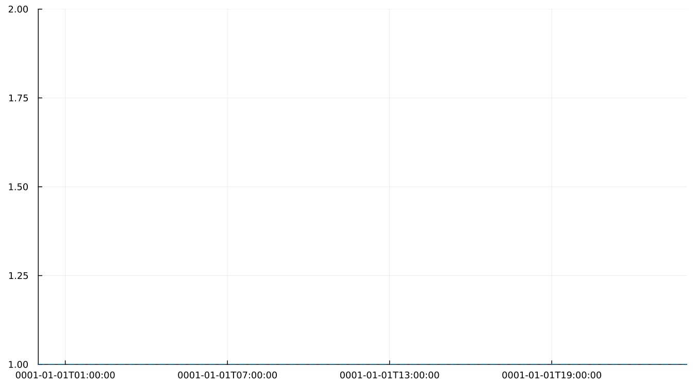

10. Trading Day
10.1 Months are not interchangeable
A month is not a fixed unit — it contains a different number of Mondays, Saturdays, and every other weekday depending on which year it falls in. Pure calendar arithmetic, no series involved:

Across 2020–2023, a given calendar month has either four or five of any particular weekday. A retail series that depends on how many Saturdays a month happened to have is responding to something with nothing to do with the season — it is a calendar-composition effect, and it requires its own regressor rather than being absorbed, incorrectly, into the seasonal factor.
10.2 Six contrasts and one simplification
X-13's trading-day regression uses six day-of-week contrasts, not seven. The seventh is redundant once six are known and the month's total length is fixed: given how many Mondays through Saturdays a month has, the number of Sundays follows automatically, so including a seventh contrast would be exactly collinear with the other six plus the month-length information already in the model. A simplified one-coefficient version — weekday activity versus weekend activity — is also available, and is what airline's own canonical spec below actually uses.
10.3 Does this series have it?
aictest fits the model with and without a trading-day regressor and compares information criteria to decide whether it belongs. On appliance, requesting the full six-contrast test:
F(6, 173) = 14.97, p = 9.2e-14Emphatically present — retail sales responding to which days of the week a month contains is exactly what one would expect.
The more interesting result is the aside. airline is passenger travel, not retail, and one might reasonably assume trading day to be a retail-specific phenomenon. It is not. On the canonical airline spec (the same one Getting Started chapter 4 and Part V both use), the one-coefficient simplified trading-day test reports:
F(1, 128) = 31.06, p = 1.4e-7— strongly present, on a series about air travel. A trading-day effect is a calendar-composition effect, not a retail-specific one, and it shows up wherever a process depends even loosely on which days of the week are business days.
The spectral evidence tells the same story, before and after a trading-day regressor is added on appliance:

10.4 How large is it?
The estimated effect as a time series, via components(res; which = :trading_day):

See also: Chapter 18 for how a trading-day spectral peak is read alongside the seasonal one. Chapter 11 for a second calendar-composition effect — one that moves between calendar months entirely, rather than merely varying within one.